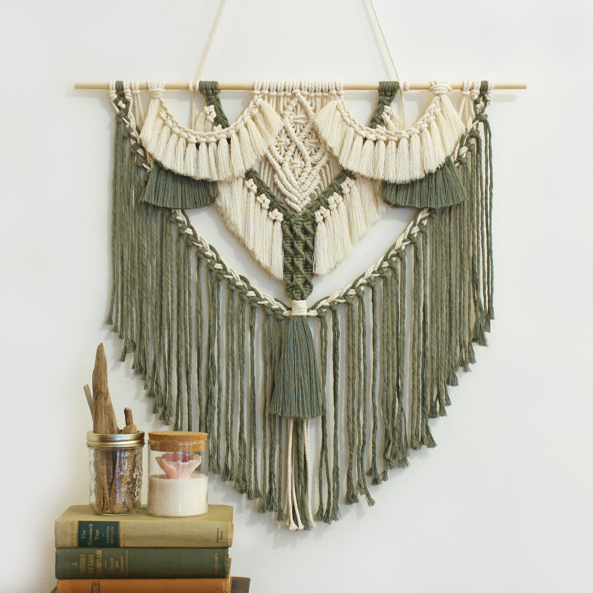
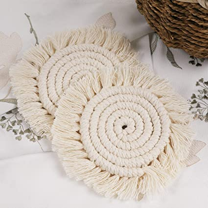

Knitting without needles is possible thanks to macrame! Macrame is one of the easy crafts that everyone can do because it is based on weaving and braiding threads with your hands making knots.
|  | |
 |
|---|
| Things You Can Do | ||
|---|---|---|
| Wall Hanging | Key Chains | Ornaments |
| Coasters | Dream catchers | Curtains |
| Bags | Feathers | Garlands |
| Plant Hanger | Bracelets | More... |
Macrame are made by making and interlacing knots, which can be the same or of different types. There are more than 50 macrame knots that can be combined to achieve very beautiful results.
This are the three principal knots you need to know for beginning with the macrame.
This knot is what gets your macrame cords attached to an object, such as dowel, branch, or an anchor cord.
https://www.youtube.com/watch?v=U4OPF0FV5TYA square knot is one of the most widely used macrame knots and need to have at least 4 cords.
https://youtu.be/9ensp8bMFQAIs a series of half knots to create a spiral stitch.
https://youtu.be/FLeVV9CzMO4